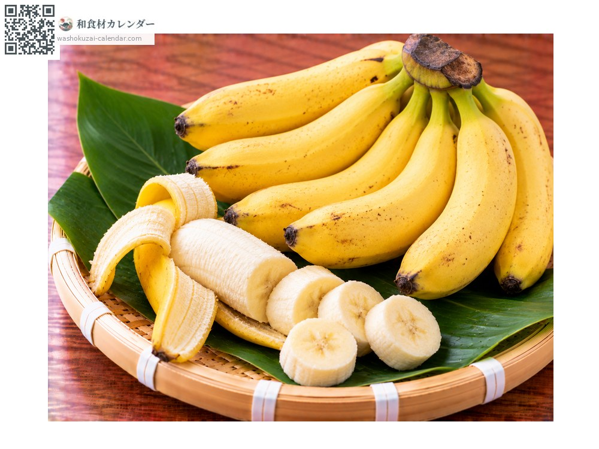
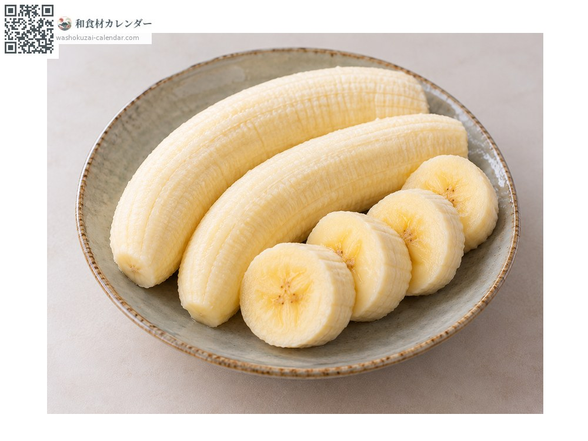
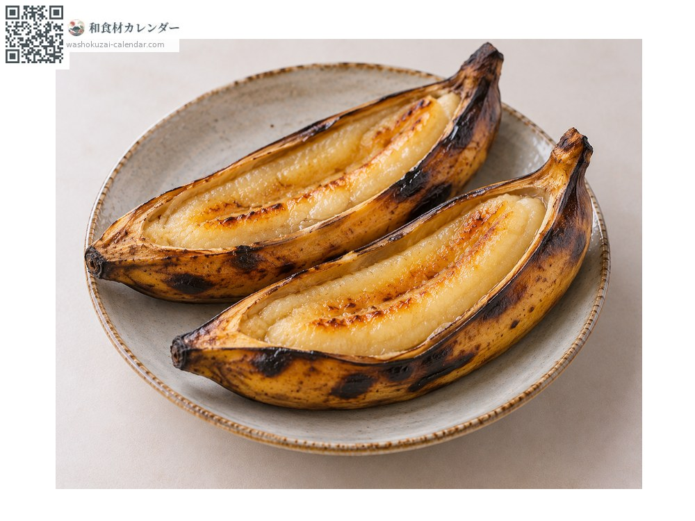
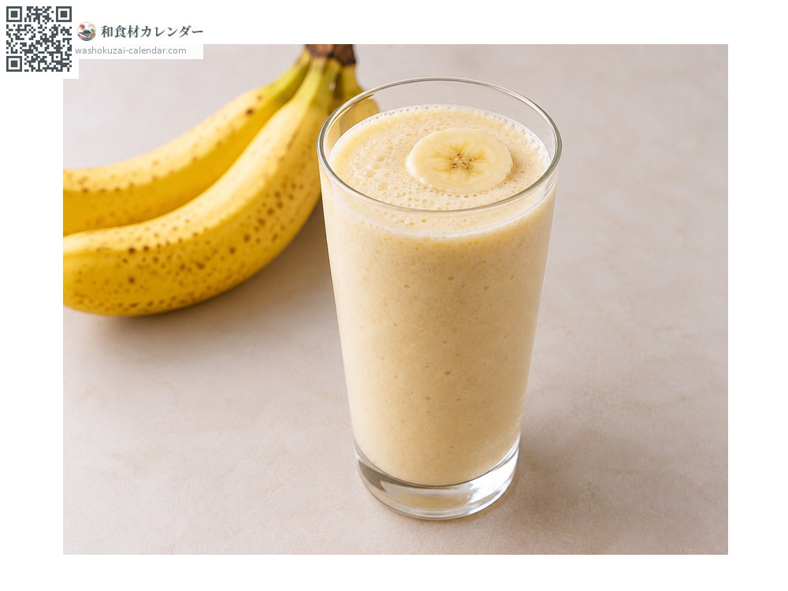

Fruit
Banana
バナナ ばなな
At its best in Aug, Sep

When it is at its best
Jan
Feb
Mar
Apr
May
Jun
Jul
Aug
Sep
Oct
Nov
Dec
In seasonAvailable
How to cook

Eaten fresh
Sweetest once the skin darkens and spots appear.

Grilled banana
Grilled in the skin; the sweetness concentrates and the flesh turns silky.

Smoothie
Blended with milk or soy milk.
How to choose
Taut skin with a firm stem. For island bananas, the smaller fruit are better.
Storage
Ripen at room temperature. Refrigeration blackens the skin and dulls the flavour.
Main areas
Good to know
The shima banana grown in Okinawa and Amami is small and slightly tart, a quite different fruit from imported bananas, with a dense flavour. It is vulnerable to typhoons and yields are unstable, so it is scarce even locally.